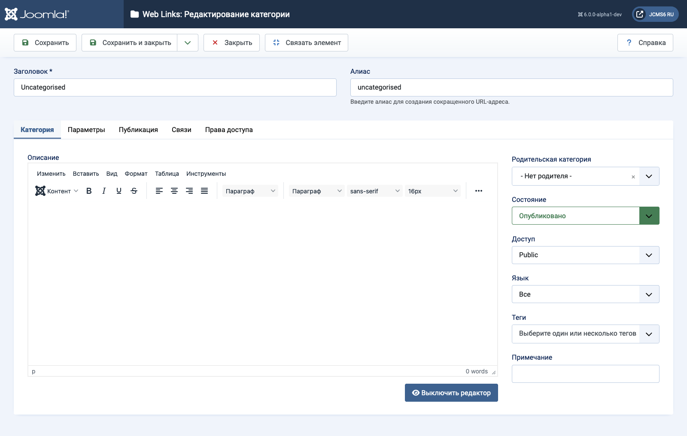

Joomla Help Screens
Веб-ссылки: Редактировать категорию
Описание¶
Страница Веб-ссылки: Редактировать категорию используется для создания новой категории или редактирования существующей. Обратите внимание, что необходимо создать по крайней мере одну категорию веб-ссылок, прежде чем вы сможете создать веб-ссылку. Кроме того, категории веб-ссылок отличаются от других типов категорий, таких как категории для статей, баннеров и каналов новостей.
Общие элементы¶
Некоторые элементы этой страницы описаны в отдельных справочных статьях:
Как получить доступ¶
- Выберите Компонент → Веб-ссылки → Категории в меню администратора. Затем...
- Нажмите кнопку Создать на панели инструментов, чтобы добавить новую категорию. Или...
- Выберите Заголовок из списка в колонке заголовков для редактирования существующей категории.
Снимок экрана¶

Поля формы¶
- Название Название для этого элемента. Оно может отображаться на странице или не отображаться, в зависимости от выбранных вами параметров.
- Алиас Внутреннее название элемента. Обычно вы можете оставить это поле пустым, и Joomla автоматически заполнит его значением по умолчанию: название в нижнем регистре с дефисами вместо пробелов.
Вкладка «Категория»¶
Левая панель¶
- Описание Описание для элемента. Описания категорий, подкатегорий и веб-ссылок могут отображаться на веб-страницах в зависимости от настроек параметров.
Переведено с помощью openai.com